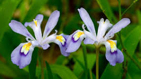
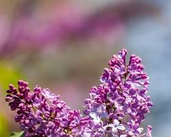

MARCH
March marks the beginning of spring blooms in many parts of the country,
though specific blooming dates depend on the date of the last frost and overall temperatures.
Everyone knows and loves March’s superstar flowers — the orchid and the tulip — but the first month of spring brings plenty of other options,
Daffodils
Daffodils, also known by their botanical name narcissus, are easy and reliable spring-flowering bulbs.
They multiply quickly and return to bloom again each spring, year after year.
Star magnolia
This magnolia features star-shaped, pure white, pale pink, or dark pink flowers.
Windflowers
They do not like soggy ground or overly dry ground.
GARDEN LOCATION These will grow well in full sun areas all the way to full shade.
Dappled sun is ideal, so planting your windflowers in woodland gardens or under trees is a great choice.
Violets
Viola is a genus of flowering plants in the violet family Violaceae.
It is the largest genus in the family, containing over 680 species.
APRIL
Spring is in full swing by April, bringing colorful blooms and fragrant florals along with it.
Expect to find spring beauties like:
Bleeding hearts
Lamprocapnos spectabilis, bleeding heart or Asian bleeding-heart,
is a species of flowering plant belonging to the fumitory subfamily (fumarioideae) of the poppy family Papaveraceae,
and is native to Siberia, northern China, Korea, and Japan
Dwarf crested irises

It offers an early perennial spring bloom in partly shady areas and grows well in rock gardens and woodland sites.
MAY
After all those April showers,May is the prime time for many rose types to start blooming in an array of colors.
You’ll also find:
Trillium
Trillium plants have oval bracts that resemble and function as leaves and arise from an underground rhizome.
Forget-me-nots

Forget-me-nots (Myosotis) are small, delicate wildflowers with bright blue flowers,
though some cultivars can be pink, white, or even yellow. They have a long history as a symbol of remembrance and love.
Lilacs

Lilacs (Syringa) are large, showy shrubs with fragrant flowers in clusters.
They come in a wide range of colors, including purple, lavender, white, and pink.
Lilacs are often associated with spring and new beginnings.
JUNE
As cool spring days begin to warm into summer temperatures,
some spring bloomers stick around and join these popular June blooms:
Foxtail Lilies
Also known as desert candles, foxtail lilies are tall, perennial plants with spiky flower clusters that resemble a fox's tail.
They come in a variety of colors, including orange, yellow, pink, and white.
Foxtail lilies prefer full sun and well-drained soil.
Roses (Rosa)

Roses are popular flowering shrubs that come in a wide range of colors, sizes, and fragrances.
They are a symbol of love, romance, and beauty.
Poppies
Poppies are annual or perennial flowering plants with large, showy flowers.
They come in a variety of colors, including red, orange, pink, white, and purple.
JULY
By July, the ground is warm, days are long, and the sky is sunny — perfect for these summer favorites:
Dahlias
Dahlias are tuberous perennials with large, showy flowers in a dazzling variety of shapes and sizes.
Dahlias are summer bloomers and thrive in full sun with regular watering.
They require staking due to their large and heavy flowers.
Daisies
Daisies symbolize purity, innocence, and cheerfulness.
They are popular choices for bouquets and gardens due to their low-maintenance nature and long bloom season.
AUGUST
Most summer flowers have already started blooming by the end of the season,
but August brings a few stragglers with it, some of which may continue flowering through early autumn.
Watch for these August flowers:
Blazing Star
Blazing stars are perennial flowering plants known for their tall spikes of vibrant purple flowers that bloom in mid to late summer.
Tube Clematis
Tube clematis are climbing vines with clusters of bell-shaped flowers that bloom in spring, summer, or fall, depending on the variety.
Daylilies
Daylilies are low-maintenance perennials known for their trumpet-shaped blooms that come in a vast array of colors,
including orange, yellow, pink, red, purple, and even bi-colored varieties.
Autumn is the time of year that flower bloom cycles start to slow down.
SEPTEMBER
September marks a transitional period for flowers, as the temperatures still reach summer highs in many states,
while evenings can bring an autumn chill.
Violas

Violas, also known as pansies, are small flowering plants with cheerful faces.
They come in a wide range of colors, including purple, yellow, white, blue, and orange, and often have multiple colors on a single flower.
Asters
Asters are daisy-like flowers that come in a vibrant array of colors, including purple, pink, red, white, and blue.
They bloom in late summer and fall, adding a burst of color to gardens when many other flowers are fading.
Petunias

Petunias are trumpet-shaped flowering plants that come in a vast array of colors, including pink, purple, red, white, and bi-colored varieties.
OCTOBER
October blooms are all about rich, decadent hues, and strong-willed flowers that withstand cold temperatures.
Autumn-blooming favorites in October include:
Roses
Roses are popular flowering shrubs that come in a wide range of colors, sizes, and fragrances.
They are a symbol of love, romance, and beauty.
Sunflowers

Sunflowers are tall, annual plants with large, bright yellow flower heads that resemble the sun.
Hibiscus

Hibiscus are flowering shrubs or trees with large, showy flowers in a variety of colors,
including red, orange, pink, yellow, and white
English Lavender
English lavender is a perennial herb with fragrant purple flowers that bloom in mid to late summer.
It is known for its calming aroma and is often used in aromatherapy.
NOVEMBER
November flowers are a balance of hardy and delicate, balancing fall colors with late-autumn and early winter temperatures.
Pansies
Pansies (Viola x wittrockiana) are cheerful flowers with upturned "faces."
They are a type of Viola and are known for their large, heart-shaped, overlapping petals that come in a wide range of bright,
pretty colors and patterns.
DECEMBER
Flowers are a less common gift or decoration in winter than during any other season of the year.
Winter's Rose Camellia
Winter's Rose Camellia is a dwarf Camellia cultivar resulting from a cross between Camellia oleifera and Camellia hiemalis 'Otome'.
Christmas Rose
Christmas Rose, also known as Hellebore, is a beautiful evergreen perennial that produces stunning white,
rose-like blooms in the winter months, even amidst snow.
JANUARY
January growing conditions bring frozen earth, frosty mornings and snow-covered greenery,
but that doesn’t stop these flowers from making an entrance in some parts of the country:
Witchhazel
Witchhazel is a large shrub or small tree native to eastern North America,
known for its unusual and beautiful blooms in late fall and winter.
FEBRUARY
February is the month of love, and what better way to demonstrate those feelings
than with fragrant flowers in subtle hues? Enjoy these late-winter blooms:
Yellow Jessamine
Yellow Jessamine is a twining vine with fragrant, yellow trumpet-shaped flowers that bloom in late winter to early spring.
It's a popular choice for adding vertical interest and color to gardens in warm climates.
Winter Jasmine
Winter jasmine is a delightful deciduous shrub that brings a burst of sunshine to the winter landscape.